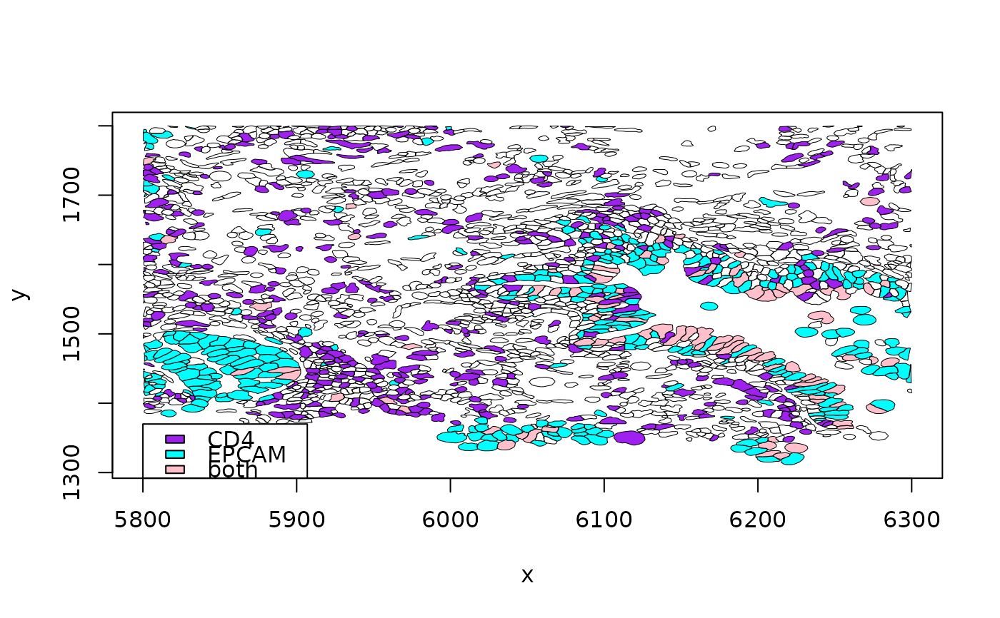

R/view_seg_g.R
view_seg_g2.Rdnaive polygon viewer, will indicate presence of transcripts for two genes in cells
view_seg_g2(x, xlim, ylim, gene1, gene2, show_tx = FALSE, ...)instance of XenSPEP
numeric(2) ordered vector of max and min on x
numeric(2) ordered vector of max and min on y
character(1) gene to be checked, cell polygon will be filled if gene has non-zero count
character(1) gene to be checked, cell polygon will be filled if gene has non-zero count
logical(1) display transcript locations if TRUE, defaults to FALSE.
passed to polygon()
Primarily for plotting. A list is invisibly returned with elements polys, ncells and call.
This is more RAM-sparing than clip_rect followed by view. Colors are pre-assigned for individual and joint occupancies in this draft of this visualizer.
luad = cache_xen_luad()
pa = cache_xen_luad()
luad = restoreZipXenSPEP(pa)
#> Warning: transcripts.parquet etc. will be overwritten
rownames(luad) = make.names(SummarizedExperiment:::rowData(luad)$Symbol, unique=TRUE)
out = view_seg_g2(luad, c(5800, 6300), c(1300, 1800), lwd=.5, gene1="CD4", gene2="EPCAM")
#> Parquet geometry data untouched by subsetting. Affects SpatialExperiment content only
#> Parquet geometry data untouched by subsetting. Affects SpatialExperiment content only
legend(5800,1370, fill=c("purple", "cyan", "pink"), legend=c("CD4", "EPCAM", "both"))

out$ncells
#> [1] 2074